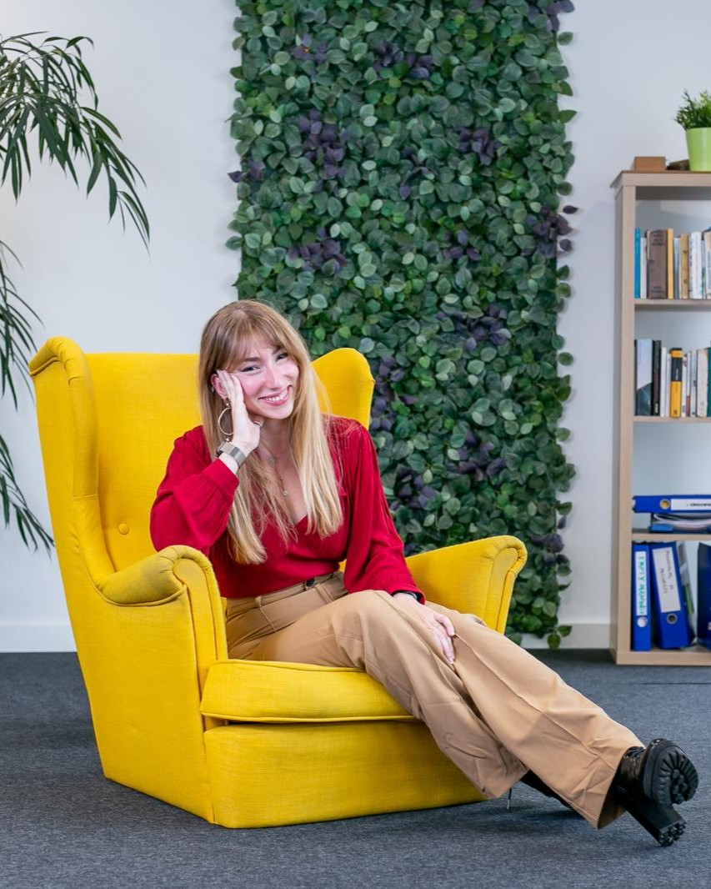

Un espacio para renacer, a tu ritmo.
Studio Renacer es la nueva consulta online de Andrea Fernández, psicóloga colegiada. Un acompañamiento empático, profesional y a tu medida para profesionales exigentes que quieren salir de la ansiedad y el estrés del trabajo, sin renunciar a su carrera — en construcción.

Hola, soy Andrea.
Trabajo con profesionales que rinden mucho y, por dentro, están al límite.
Me formé donde la mente se pone de verdad a prueba —en crisis y emergencias— y ahí entendí algo que guía cómo acompaño: las personas más capaces suelen ser las que peor piden ayuda. Aguantan hasta que el cuerpo dice basta.
Después me mudé de país y viví en mi propia piel el desarraigo y el duelo migratorio. Por eso hoy acompaño, en español, inglés y danés, a personas que sostienen su carrera lejos de casa.
No creo en las recetas rápidas ni en las promesas vacías. Creo en ir a la raíz, sin prisa y a tu medida — para que salgas de la ansiedad de verdad, no solo por una temporada.
— Andrea
Un acompañamiento, no una receta.
A la raíz, no parches
Terapia de largo plazo que va al origen de tu ansiedad, no a tapar el síntoma con un consejo que dura un día.
Pensado para quien rinde al límite
Conozco la presión del alto desempeño: trabajamos para que salgas del estrés del trabajo sin renunciar a tu carrera.
En tu idioma, estés donde estés
Sesiones online en español, inglés y danés — también para quien vive y trabaja lejos de casa.
Espacio seguro y con fundamento
Confidencialidad y RGPD, sesiones cifradas y un enfoque serio — sin etiquetas rígidas ni promesas vacías.
Servicios pensados para ti.
Sin sobreprometer: dos formas de acompañarte.
Sesiones individuales
Consulta psicológica online, 1:1, centrada en tu ansiedad y tu momento vital, en un entorno privado, cómodo y seguro.
Formación online
Talleres y programas sobre ansiedad, estrés laboral y herramientas para sostener tu bienestar en el día a día.
¿Tu ansiedad es del trabajo? Descúbrelo hoy.
Déjame tu email y te envío gratis la guía «5 señales de que tu ansiedad es laboral — y qué hacer». Te llega al instante. Y serás de las primeras en saberlo cuando Studio Renacer abra sus puertas.
¡Hecho!
Revisa tu correo: tu guía va de camino (mira también spam). Te avisaré en cuanto abramos. Cuídate mucho.
Descargar la guía ahora